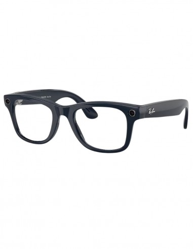
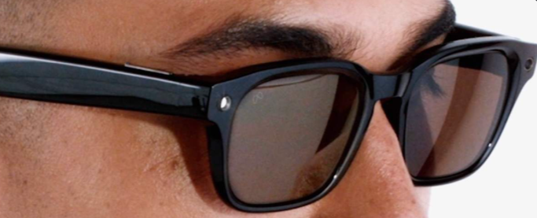
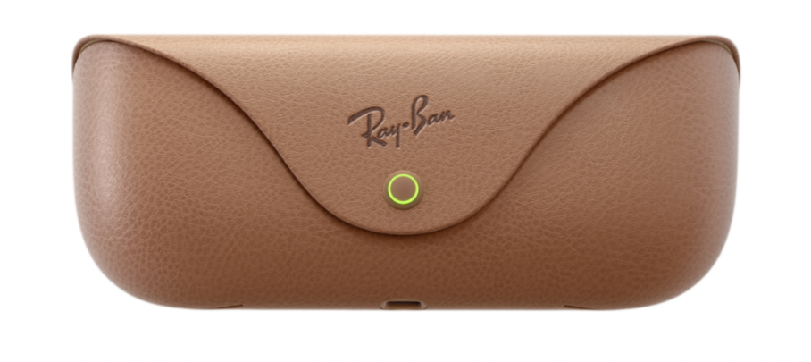
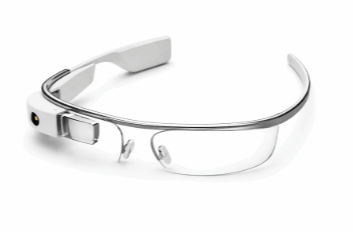
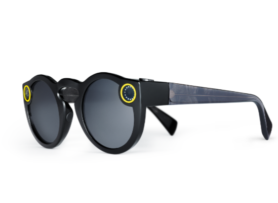
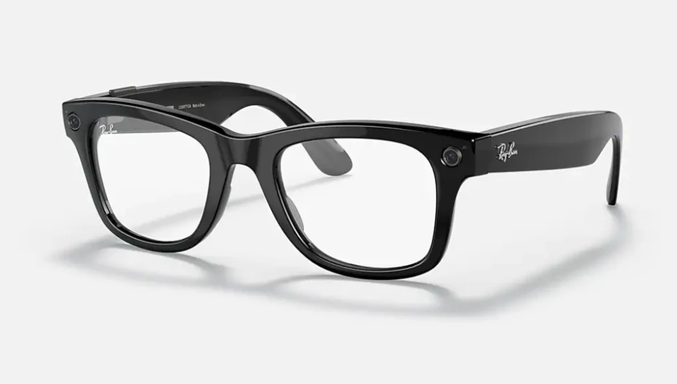
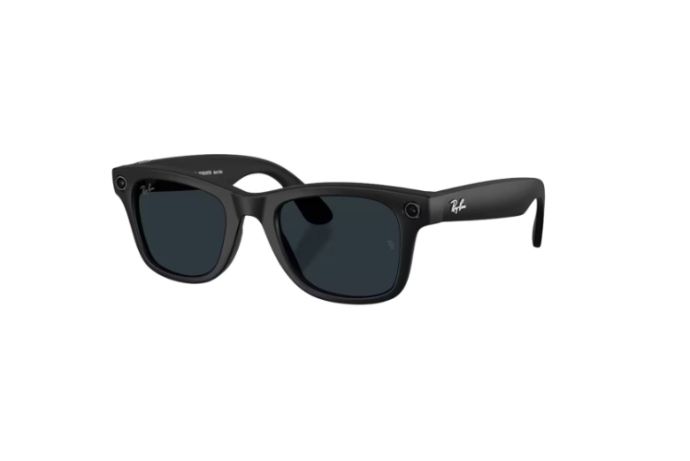

Dispositivo de interacción persona-ordenador-Guillermo Alipio Cristeto Pérez
Ray-Ban Meta Gafas Inteligentes
Gafas inteligentes de que integran cámara ultra gran angular de 12 MP, sistema de audio de oído abierto y el asistente de inteligencia artificial Meta AI sin aislar al usuario de su entorno.

- Fabricante
- Luxottica & Meta Platforms
- Tipo
- Gafas inteligentes
- Lanzamiento
- Octubre de 2023
- Procesador / IA
- Qualcomm Snapdragon AR1 Gen 1 / Meta AI Multimodal
- Entradas y Salidas
- Voz ("Hey Meta"), touchpad en patilla, botón de disparo y 5 micrófonos
Elección
Las Las gafas inteligentes de Ray-Ban,aunque no son tan recientes como otros dispositivos hardware,me han parecido una gran elección porque me parecen la base para un futuro.Representan un cambio clave en la Interacción Persona-Ordenador: en lugar de aislar al usuario con unos visores inmersivos y pantallas pesadas como las gafas de realidad virtual tradicional, llevan la computación a un complemento de uso diario que la gente ya está acostumbrada a usar.
El usuario interactúa mediante comandos de voz, toques táctiles en la patilla o simplemente capturando el mundo desde su propia perspectiva visual sin tener que sacar el movil del bolsillo.Por eso considero que es el ejemplo perfecto de tecnología ambiente e interfaz invisible.
Beneficios
- Captura instantánea de manos libres: Sensor ultra gran angular de 12 MP para fotos y vídeos en alta definición vertical directamente desde la vista del usuario.
- Audio de oído abierto: Microaltavoces direccionales integrados en las patillas que proyectan el sonido hacia el oído reduciendo la pérdida acústica y permitiendo escuchar música o llamadas sin perder la atención del entorno.
- Asistencia inteligente: Reconocimiento de objetos en tiempo real, traducción instantánea de señales/textos y respuesta a preguntas complejas mediante análisis multimodal de la cámara.
- Ergonomía: Diseñadas sobre monturas icónicas como Wayfarer, Skyler y Headliner, con un peso reducido idéntico a unas gafas convencionales contando con su version de vista tradicional y su estilo de gafas de sol.
Fotos


Evolución
-
Google Glass (2013 - 2014)
Primer concepto comercial masivo de visualización en pantalla HUD sobre el ojo. Fracasó por su elevado precio, batería limitada, estética poco natural y rechazo social a la privacidad.

Google Glass Explorer Edition -
Snap Spectacles (2016 - 2021)
Gafas diseñadas por Snap Inc. enfocadas en grabar contenido circular en primera persona para redes sociales. Demostraron que el público aceptaba la presencia de cámaras en accesorios de moda.

Primera generación de Snap Spectacles -
Ray-Ban Stories (2021)
Por asi decirlo serian la primera generación de este modelo actual.Consiguió camuflar la tecnología dentro del modelo de gafas clásico, aunque la cámara de 5 MP y la ausencia de IA inteligente eran puntos débiles.

Ray-Ban Stories de primera generación -
Ray-Ban Meta Smart Glasses (2023 - Presente)
Rediseño total interno con chip Snapdragon AR1 Gen 1, fotos de 12 MP, vídeo en 1080p, sistema de 5 micrófonos de alta fidelidad e integración profunda con la Inteligencia Artificial Multimodal Meta AI.A partir de esta yo considero que empresas como Apple se inspiraron para algunos de sus disposivos,pero meta no se queda atras y siguen haciendo mejoras generación tras generación.

Ray-Ban Meta Smart Glasses actual
Bibliografía y Fuentes
- Página Oficial de Ray-Ban Meta en Meta.com — Especificaciones técnicas oficiales, funcionalidades de audio, cámara y modelos.
- Sitio Oficial Ray-Ban (Luxottica) — Información sobre diseños de monturas, lentes graduables y acabados.
- Meta Newsroom (Nota de Prensa Oficial 2023) — Presentación oficial de las gafas inteligentes y hoja de ruta con Meta AI.